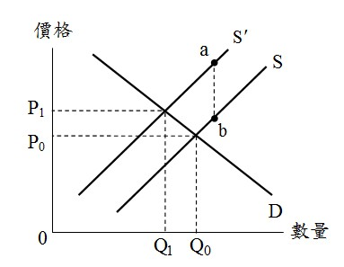
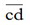
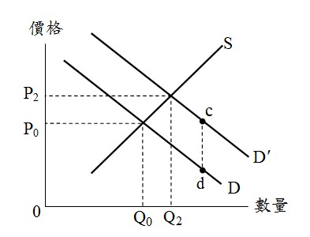
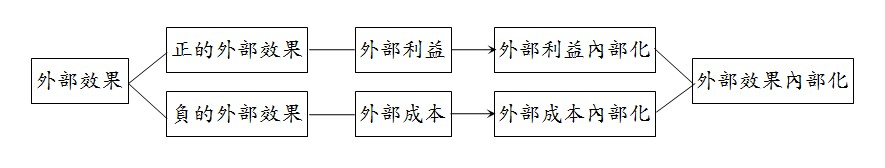

外部效果
外部效果分為外部成本（亦稱外部不經濟）與外部利益（亦稱外部經濟）二種。
• (一) 外部成本
-
意義：土地開發或土地利用時，有一部分成本由開發者自己負擔，稱為私人成本或內部成本；另有一部分成本不由開發者自己負擔，而由社會整體負擔，稱為外部成本。
-
私人決策與社會決策不一致：外部成本造成私人決策與社會決策不一致，導致市場失靈之結果。如圖(一)所示，D表示土地開發利益曲線，S表示土地開發之私人成本曲線。由D與S之交點，決定私人土地開發之開發成本P0與開發數量Q0。如果私人土地開發存在外部成本[圖片1]，S’表示土地開發之社會成本（私人成本 + 外部成本 = 社會成本），則由D與S’之交點，決定社會土地開發之開發成本P1與開發數量Q1。由此可知，如果未加入外部成本，開發者將以偏低之開發成本開發過多之土地數量。
[圖片2]
圖(一) 外部成本
-
外部成本內部化：政府對外部成本予以課稅，使外部成本由開發者負擔，則開發者開發土地之數量將由Q0減少至Q1。
-
舉例：私人開發山坡地，除開發者自己負擔之開發成本（私人成本）外，亦造成土石流潛在風險增加（外部成本）。如果政府將外部成本予以內部化（如課徵開發影響費），將使山坡地開發數量減少。
• (二) 外部利益
-
意義：土地開發或土地利用時，有一部分利益由開發者自己享受，稱為私人利益或內部利益；另有一部分利益不由開發者自己享受，而由社會整體享受，稱為外部利益。
-
私人決策與社會決策不一致：外部利益造成私人決策與社會決策不一致，導致市場失靈之結果。如圖(二)所示，S表示土地開發成本曲線，D表示土地開發私人利益曲線。由D與S之交點，決定私人土地開發之開發利益P0與開發數量Q0。如果私人土地開發存在外部利益[圖片3]，D’表示土地開發之社會利益（私人利益 + 外部利益 = 社會利益），則由D’與S之交點，決定社會土地開發之開發利益P2與開發數量Q2。由此可知，如果未加入外部利益，開發者將以偏低之開發利益開發過少之土地數量。
[圖片4]
圖(二) 外部利益
-
外部利益內部化：政府對外部利益予以補貼，使外部利益由開發者享受，則開發者開發土地之數量將由Q0增加至Q2。
-
舉例：私人辦理都市更新，除開發者自己享受之開發利益（私人利益）外，亦造成都市機能復甦（外部利益）。如果政府將外部利益予以內部化（如租稅減免、容積獎勵等），將使都市更新數量增加。
• (三) 結論
-
外部成本造成私人成本與社會成本之分離，外部利益造成私人利益與社會利益之分離。
-
庇古（Pigou）主張，政府應對外部成本課徵租稅（此種租稅，稱為庇古租稅），對外部利益給予補貼（此種補貼，稱為庇古補貼）。其目的在使外部效果內部化，促使私人成本與社會成本一致、私人利益與社會利益一致，以解決市場失靈問題。
[圖片5]
這篇文章考過哪些題目¶
讀完試著自己作答，再點進去對答案。依文字相似度自動比對，不一定完全對應。
- 98 普考《土地利用概要》第 1 題
都市土地使用規劃市場失靈的原因有那些？請就失靈原因提出解決策略。（25分） - 98 普考《土地利用概要》第 1 題
都市土地使用規劃市場失靈的原因有那些？請就失靈原因提出解決策略。（25分） - 96 高考《土地利用》第 2 題
在土地使用變更體制中有「回饋」乙詞，請問何謂「回饋」？通常在土地使用變更會要求那些「回饋」而其原因為何？（25分） - 99 高考《土地經濟學》第 2 題
農地利用能夠產生那些多功能性（Multifunctionality in agricultural land use）？… - 102 地特三等《土地政策》第 3 題
試就現行土地變更使用回饋機制與平均地權土地漲價歸公之關聯性，比較分析之。 - 102 地特四等《土地利用概要》第 1 題
請說明土地使用變更規劃與實施發展許可制有何關係？並請說明土地變更使用時，民間業者應負責之「外部性設施」與「內部性設施」內… - 110 高考《土地經濟學》第 4 題
某些城市常利用開放空間、綠帶和農業保護區等進行管制，此為開放空間分區管制(open-spacezoning)。你覺得開放… - 110 地特四等《土地利用概要》第 3 題
何謂市場失靈？何謂政府失靈？兩者是否有關係？請以目前農地違規使用情形說明之。（25分）
另有 1 題相近，可從題目頁的「延伸閱讀」找到本文。
文章圖片¶




